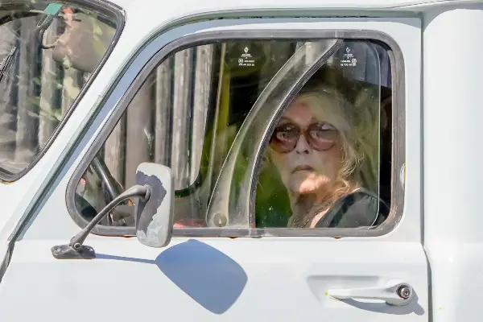
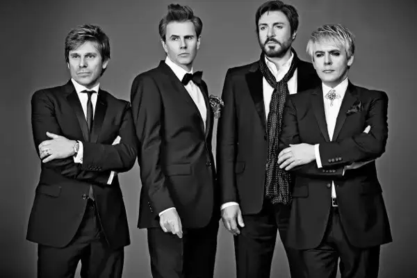
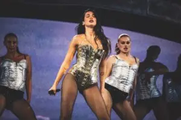
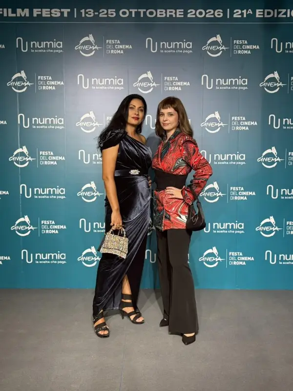

Сцена

Последната тајна на Брижит Бардо: Нејзиниот сопруг остана без наследство и познатата вила во Сен Тропе
Зад гламурозната фасада на животот на една од најголемите икони на светското кино, се криеше длабока емоционална осаменост.

Роџер Тејлор од „Дуран Дуран“ го напушта бендот по 25 години, ја откри причината
Роџер Тејлор, 66-годишниот тапанар на Дуран Дуран, го објави своето заминување од бендот.
ОД ХОЛИВУДСКА ЅВЕЗДА ДО ПРИНЦЕЗА НА МОНАКО Животната приказна на Грејс Кели, жената која се откажа од филмската слава за љубовта
Грејс Патриша Кели, една од најголемите филмски икони на златното доба на Холивуд и подоцна принцеза од Монако, е родена на 12 ноември 1929 година во Филаделфија, САД.
Шаде и „Оејзис“ нема да присуствуваат на приемот во Рокенрол куќата на славните
Лос Анџелес – Фил Колинс, „Ајрон Мејден“, Били Ајдол, Квин Латифа, „Оејзис“, Шаде и „Џој Дивижн“/„Њу Ордер“ годинава ќе бидат примени во Рокенрол куќата на славните , заедно со ...
Карл Орф, Пучини, Хендл, „Рејдиохед“, Сиа и македонски песни на програмата на концертот „Завет“ на Ана и Игор Дурловски на 6 декември
Силно верувам во тоа дека само квалитетна изведба може да допре до срцата на публиката, вели македонската оперска пејачка со светски глас, сопранот Ана Дурловски пред концертот ...
Борачите на Вардар одат во Малта да го повторат минатогодишниот успех
По минатогодишниот фантастичен успех и освоеното прво место на меѓународниот турнир во борење слободен стил на Малта, Боречкиот клуб Вардар и годинава се враќа на истото место с...

Историски успех за Дуа Липа: Ќе стане првата британска соло пејачка што ќе го предводи фестивалот „Коачела“
Светската поп-ѕвезда Дуа Липа, која има косовско-албанско потекло, се подготвува за еден од најзначајните настапи во својата кариера.
Успешната сезона на тандемот Матеј Белистојаноски и Александар Кузмановски наградена со „13 Ноември“ – најдобар спортист и најдобар тренер
Матеј Белистојански, член на Карате клуб Олимпик, е добитник на наградата „13 Ноември“ на Град Скопје за најдобар спортист .
Од гаража до арена – NEXT TIME во „Ништо лично“: Браќата Филиповски за славата, растежите, падовите, разделбите, несогласувањата и приватниот живот зад сцената (ВИДЕО)
Токму така започнува приказната на Мартин и Стефан Филиповски, идентичните браќа близнаци кои македонската јавност ги запозна и ги засака како NEXT TIME.

Македонскиот филм „Скејтбордингот не е за девојчиња“ на Дина Дума со девет фестивалски селекции во октомври и ноември
По светската премиера на „Трајбека филм фестивал“ (Tribeca Film Festival) во Њујорк, филмот го продолжи своето патување на Меѓународнит фестивал во Рејкавик (Reykjavik Internati...